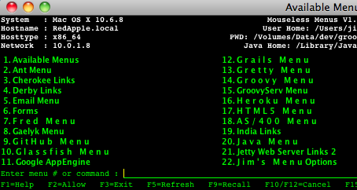
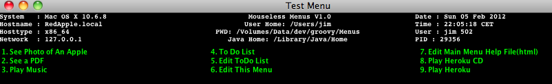

Apologies first. This is my first GitHub project. It ia a learning curve that i've found to be rather steep. Please bear with me or better yet, send suggestions.
This upload is the initial preview of a little menu system that's written as a groovy testbed with some java source thrown in.
It is based on the menu systems we have on IBM iSeries mainframes. It uses function keys rather than a mouse. It mimics the 5250 green screen we typically find on older IBM kit.
It is NOT a bash shell. It does not hold state across commands. You cannot change directories unless that is done before Menus starts. You can try using the 'cd' command to change directories and influence subsequent commands to start at a different location in the file structure. This does not work well yet.
We can start an Apple app from the command line or within a menu by using the -a option. So to start the text editor and edit a known file, we could use :
open -a TextEdit.app /Volumes/Data/dev/groovy/Menus/data/todo.html
You cannot use the bash shell expansion characters like * to gain a full list of matching objects. So something like 'ls -al *.java' will NOT filter your list of files. It just reports the file *.java is not found.
Function Key Usage - like IBM 5250 specifications
F1 - Help
F2 - Toggles ability to copy text from console message output at bottom of display.
F3 - End menus and exit
F5 - Refresh current menu, for example if you change a menu file outside the menu system
and want to reload the updated menu or if you are looking at the commands for each menu item, F5
will re-display the menu text again.
F9 - Recopy the previous command onto the command line - like the up arrow key in bash shell.
F10 & F12 - backstep key; used to return to the prior menu before the current one.
Both choices are identical as some keyboards may not have an F12 key.
F15 - Use this after running menu option 1 to create a list of the menus available in the
./data folder. It will provide a peek at the different menus found in the ./data folder.
F17 - Show the command that is run for each menu item. The menu text is replaced on screen
by the actual command.
Menus are normal text files created with a simple text editor. Each menu entry is placed on a single line of the text file and each line ends with a cr/lf signal character set. These files are placed into the ./data sub-folder of the menu directory with a .txt suffix.
Optionally, a menu can have a menu title. This is declared using the syntax:
A menu entry is composed of two parts divided by a := separator. Text to the left of the := appears on the menu entry, while text to the right of the := is treated as a command string to be executed. How is the command string executed ? Each menu entry is assigned a number when it is displayed. So by keying that number on the command line, the command text for the matching entry is executed.
For example, if we have available menu files like this :

We could choose menu option two to look at the menu of commands for the Ant build tool. We would see a menu like this : 
The content of the ant.txt file looks like this : 
So we can see that this menu has the title 'Ant Menu' with one menu option. Key the number '1' into the
Press the F10 or F12 function key to return your display to the menu seen before, the previous menu.
Here is another fictional menu.txt file :
What is the current PATH variable:=echo $PATH Display the Java Compiler Version:=javac -version Display A Menu of Network Commands:=go network See Photo of An Apple:=open ./data/apple.jpg See a PDF:=open ./data/FairChild.pdf Play Music:=open ./data/MoolaMantra.mp3 To Do List:=open ./data/todo.html Edit ToDo List:=open -a TextEdit.app /Volumes/Data/dev/groovy/Menus/data/todo.html Edit This Menu:=open ./data/test.txt Edit Main Menu Help File(html):=open -a TextEdit.app /Volumes/Data/dev/groovy/Menus/data/help.html Play Heroku CD:=cd /Volumes/Data/dev/play/play-1.2.4/samples-and-tests/heroku/ Play Heroku:=play run &
the display would look like : 
1. What is the current PATH variable 2. Display the Java Compiler Version 3. Display A Menu of Network Commands É. Enter menu # or command : ________________________
with focus on the command field. If we key the number '2' and press the Enter key, a sub-process is started with the command 'javac -version' and any output from both the standard and error output streams will return to, and be displayed in, the joblog/audit trail, seen below the area of menu choices.
There are several builtin commands within the menu system. Only the 'go' command is covered here. This 'builtin' command loads a menu of other choices from another file found in the ./data directory.
In the above example, keying the number three plus the enter key, directs the menu system to look for and, if possible, load another set of menu choices from ./data/network.txt
The format of the menu's filename can be any of these choices for this example :
It's all like a short-hand way to key a single number plus enter key to cause a system action, rather than typing or re-typing over and over again any long and/or complex commands. Two keystrokes rather than 30 or 40 keystrokes. Saves time.
Commands be almost any command the you might enter in a bash terminal window. Bash commands like echo, ls, ifconfig and many more. When there is a need to work with other types of files like MP3 music files or HTML files, we can provide the Apple Mac command 'open' before the name of the document or file to be accessed.
Continuing with this example, assume we are now looking at the set of network menu entries. The F10 and F12 function keys can be used as a backstep feature to return to the prior menu that was seen before the network menu, or abc.txt in this case. There is no limit to menu depth, so we could have main menu call network menu call wireless menu to reach a menu item there. Once completed, the F12 or F10 key can be used to walk back thru previous menus. There is no difference between F10 and F12. Both behave identically.
The F9 function key works in the same way to walk back thru each of the prior commands entered. It mimics the bash shell up arrow feature to recall previous commands. When the command is visible on the command line, it can be changed if necessary and the enter key will cause that command to execute.

Here are more notes about menu features :
Since this help file is just HTML text, we can use many of the features of HTML to offer nicer looking help. Here we see a table with colored backgrounds :
| A lime colored table background using color names. |
| A rose colored table background using hexadecimal values "#C00080". |
| A red colored table background using hexadecimal values "#FF0000". |
| A blue colored table background using RGB values "rgb(0, 0, 255)". |
Look at this reference: See Notes about Play Framework. As of now, this help feature uses html but cannot link to href entries at another URL. So this fails :
<a href="./data/play.html">See Notes about Play Framework</a>
Take a look at this screenshot. The performance of a command is measured from the start until finish and the amount of seconds for the job are seen here. In this example, elapsed=0.10838 sec.s the task took about .1 of a second to execute.